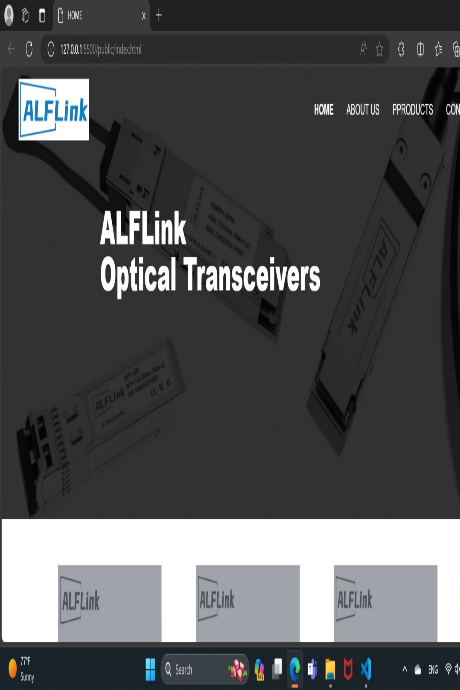

Proyek Terakhir

Teknologi Situbondo
Blog "Ilmu Teknologi" di teknologisitubondo.blogspot.com berfokus pada berbagai topik teknologi. Artikel-artikelnya mencakup pemrograman, sistem operasi. Blog ini juga menyajikan informasi tentang distribusi Linux seperti Kali Linux, Slackware, Gentoo, dan lainnya. Ditulis oleh Faiidd.